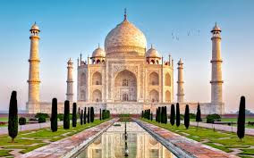

Travel Blog
Travelnexplore.com
Contact:8466892614
Email:Travelblog@gmail.com
To Register Click here
To know the details Click here
India is a canvas of beauty and colors. Starting from unique culture to international styled destinations, India is a land for everyone. Are you looking for traveling in a shoestring budget? India has numerous spots for backpackers, just like you. Are you looking for a vacation fit for the kings? India is riddled with luxury trains, boutique hotels, heritage spots and much more. It is all about how you are planning to spend your time and India is an amoeba, which would transform into a personalized paradise, just for you. There are so many best places to visit in India.

Do not worry about the difficulties of getting a tourist visa. You can easily apply for e-visa to enter India. Every year, 1.69 million tourists visit India with e-visa(source).
1. Goa, India
Among the endless things you want to complete in your bucket list before you get married, Goa would be able to provide opportunity for completing at least half of them. This region hold 30 different beaches, unique churches, interesting natural and adventure activities and last but not least, the never-ending nightlife. This is the land with booze everywhere and energetic activities every minute. Do you want to have some time to yourself, enjoy scuba diving and merge into nature with spice plantations, trekking and others.
2. Andaman Islands, India
Although assumed as single destination, this place is a cluster of small islands, each famous for beaches and unique water activities. Starting from simple boating to scuba diving, you can enjoy all kinds of water activities here.
On the silky beaches, the place provides endless entertainment and beautiful culture
Andaman is not the only island of India but this is the one of the famous places to visit in India. There are numerous other famous islands and some unique and daring islands. Are you up for some adrenaline time? Visit Top Ten Unique Islands to Visit in India to add more destinations to your bucket list.
3.Agra, India
Let’s face it. Everyone who visits France, want to visit Eiffel Tower. Therefore, everyone who visits India would obviously want to visit Taj Mahal. The World Wonder of India, the marble mausoleum is the heart of tourism of India. Agra is not just about Taj Mahal. Agra is the remainder of Mughal dynasty, for today’s Agra sightseeing tour.

4. Rishikesh, India
Yes, bordering River Ganges, this is yet another spiritual destination and best places to visit in India. However, it is just one of the faces of Rishikesh. It is also famous for yoga, meditation and Ayurvedic styled vacation, thanks to the Himalayan nature of the region. For youngsters, this is the place for beautiful adventure activities like rafting, zip lining, bungee jumping and much more.
©TravelBlog Page
Contact:8466892614
Email:travelblog@gmail.com